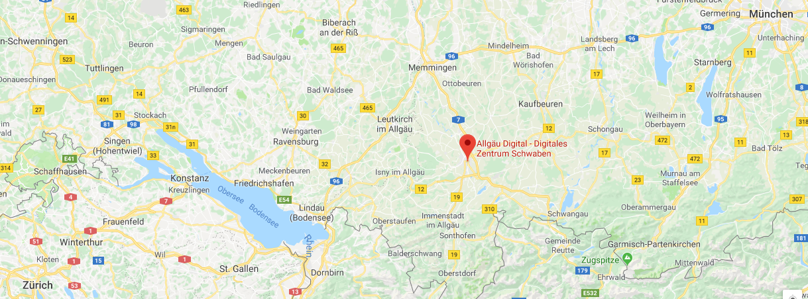

About
Welcome to the first edition of the Data Pioneers conference! [1k word summary]
Talks: Data Pioneers 2018 provides high-profile talks from experienced regional data scientists. The topics cover data science, machine learning, and artificial intelligence in industrial and business relevant settings and applications. The final programm is available in September 2018.
Program: The conference is held on November 8th 2018, 9-17h. The program includes exciting key note presentations, in-depth data science talks, and lunch and coffee breaks for networking and inspiring exchanges on how to extract knowledge from data. The conference language is English.
Registration: Registration opens in August 2018. The regular conference ticket is 75€, the student ticket is 25€. The tickets include entrance to the conference, lunch, and coffee breaks. Leave your contact details here to get updates!
Location
Allgäu Digital - Digitales Zentrum Schwaben, Keselstraße 16, 87435 Kempten (Allgäu)
Organizers
-

Julia Ehrenmüller
Julia is ...
-

Manuel J. A. Eugster
Manuel is a data scientist by heart on the mission of turning data into insights. Currently he leads the Data Analytics & Insights unit at Avira. There he and his team develop data analytics solutions that transform massive amounts of (real-time) data from various sources into knowledge about customers and products. Prior to Avira, he was a scientific researcher at the Probabilistic Machine Learning group at HIIT, Aalto University in Finland and the Department of Statistics at LMU Munich. He worked, among other things, on next generation information retrieval systems using brain-computer interfaces. He holds a PhD in Statistics from LMU Munich, a MSc in Computational Intelligence and a BSc in Software and Information Engineering from TU Vienna.
-

Christian Dosch
Christian coordinates Allgäu Digital – Digitales Zentrum Schwaben as a project manager. Allgäu Digital is a startup center, incubator and network with the focus on digital business models situated in Kempten, Allgäu. After finishing his studies at the Hochschule der Medien in Stuttgart, he worked project-based for different film and media companies in Munich and Berlin and then passed his experience to other filmmakers as a Film Commissioner in Stuttgart Region. In 2016 he decided to move to the Westallgäu, became self-employed with the Spurfinder UG and nows stands up for putting rural areas on the map of digital transformation and innovation.
Partners
Contact
Allgäu Digital - Digitales Zentrum Schwaben (DZ.S)
Keselstraße 16
87435 Kempten (Allgäu)
Telephone: +49 831 57537 60 Email: team@datapioneers.tech Twitter: @TheDataPioneers